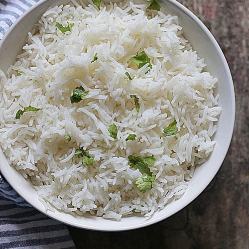
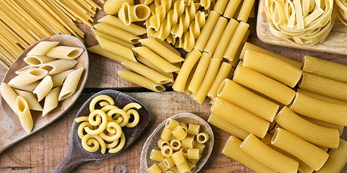
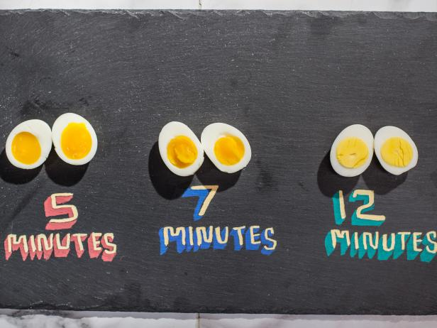

Basics of the Kitchen
When beginning to learn how to cook, it can be quite intimidating. You hear all these fancy words like “al dente” or “poach”. Don’t stress because I’m here to help you along the way. All these professional chefs began somewhere before they got to where they are now.
How to Properly Cook Rice

Learning how to cook rice is very fundamental to many dishes you will create in the kitchen. It’s an important skill that everyone should have. Instead of buying boring packaged rice that cooks in the microwave, I will teach you how to make the best and most delicious rice.
Basmati rice is a long-grain rice that is traditionally grown in India, Pakistan, and Nepal. It’s one that you will find most commonly found in restaurants and is all around great for beginners.
What you’ll need is some vegetable oil, water, and basmati rice. Heat a pot on high and pour some vegetable oil, enough to coat all your rice. Next add your rice to the pot and begin mixing it. This process will coat all the rice with that vegetable oil, creating individual pieces of rice. The ratio we use for basmati rice is 1 cup to 1 1⁄2 cup water. You can substitute the water for any type of broth if you want which will create an even tastier rice.
Once you add your ratio of water to the pot of rice, wait for the water to bubble. Once you see it start to bubble, turn the heat to medium-low and cover the pot and let it simmer. Time the rice for 12 minutes, and once that time is finished turn off the heat. Keep the pot covered for an additional 10 minutes to complete the cooking process. After those 10 minutes are up, fluff the rice and finally serve it.
How to Properly Cook Pasta

When you shop for pasta in the supermarket, you find all these different shapes and sizes of pasta. I’ll be giving general directions that you can follow to cook any type of pasta.
First, heat a pot of water and bring it to a boil. Once it starts boiling, add a tablespoon of salt to the water. This simple step will be the difference between a tasty and average pasta. Next you want to add your pasta to the pot. Check the back of the box for how long you should keep the pasta boiling. If you want pasta that is fully cooked, we call that “al dente”. This means the pasta is firm to the bite and not soft.
Boiling Eggs

Boiled eggs are a food that everyone eggs regularly. There is a difference in how people like their boiled eggs. Some people like the yolk runny while others like it as dry as the Sahara Desert.
The first step is the same no matter how you want the yolk to be. You first place the eggs in a pot and cover them with cold water. You heat the pot until the water begins to boil. Once the water boils, turn off the heat and keep the eggs in the pot of hot water for 10-12 minutes. If you want the yolks runny, keep them for 10 minutes and if you want the yolk hard keep it for 12. Next you place the eggs in an ice bath which is just a bowl containing cold water and ice. This stops the cooking process of the eggs.
There are different ways to peel the eggs. The first method you can do is simply crack and roll the egg on a countertop. Then you begin to peel the shell. Another method, which I don’t recommend, is to create an opening for a spoon between the egg and the shell. Next you slide the spoon in that opening and start peeling away with the spoon.